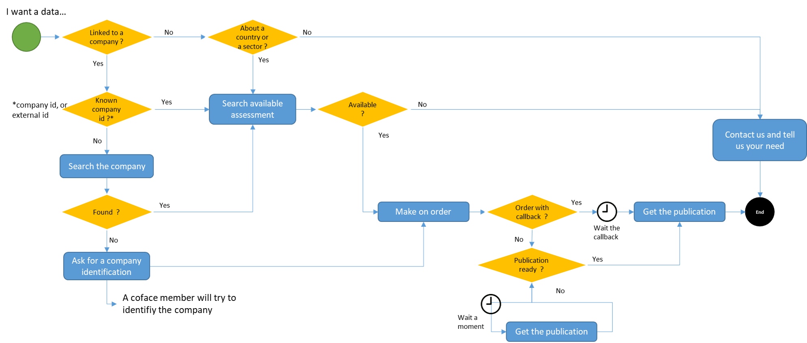

Coface ICON Business Information API
V2
| Publication | Available format | Product type |
|---|---|---|
| Full & Snapshot Reports | JSON, HTML, PDF, XML | Report |
| Credit opinion Reports | JSON, HTML, PDF, XML | Report |
| Score Report | JSON, HTML, PDF, XML | Report |
| Country risk assessment | JSON | Assessment |
| Sector risk assessment | JSON | Assessment |
| Debtor risk assessment (with and without history) | JSON | Assessment |
| Credit opinion & advanced opinion | JSON | Assessment |
| Icon global financials | JSON | Financial |
| Financials | JSON | Financial |
Process

To order monitoring or report, you need to follow 5 steps :
- Find the company
- Check if the publication is available
- Order the publication with or without monitoring
- Verify that the order is finished
- Retrieve the publication
In case you have ordered a monitoring, during the next year, you can receive notifications. Once you get one, you can retrieve its content.
To order monitoring or report, you need to find on which company you want the data.
To identify a company, you have two possibilities : use the Coface Id of the company or use an unique id from a national referential.
For example : in France, all companies must be registred in the National Institute of Statistics and Economic Studies (INSEE). This repository is used by Coface.
In progress
In progress

In progress
In progress

In progress